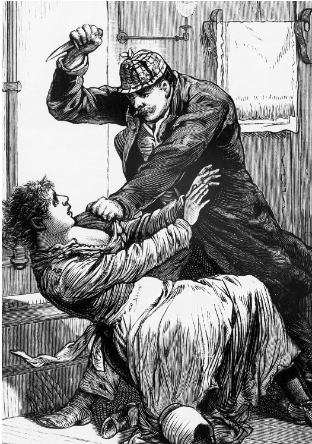
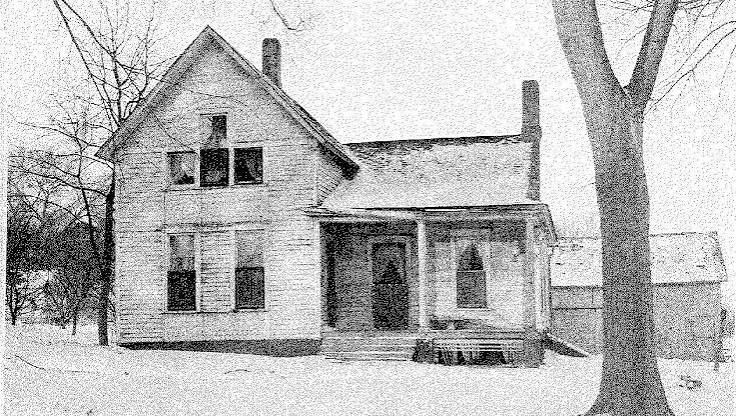
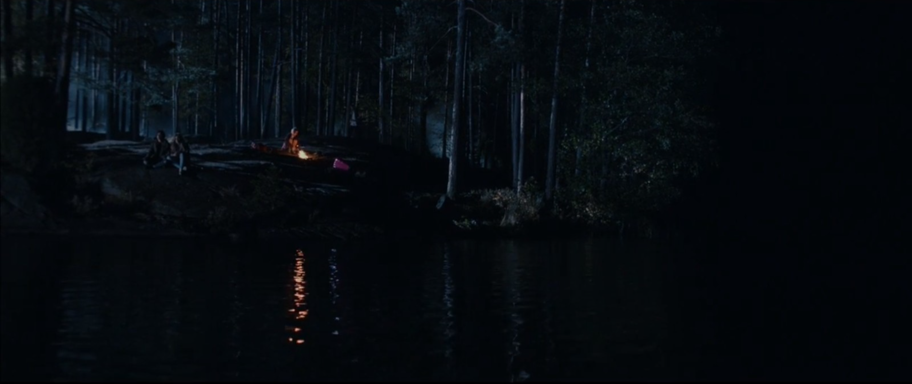

EXPEDIENTES
ARCHIVOS
Seis casos reales que nunca encontraron un cierre definitivo. Busca por nombre o lugar y filtra por el estado del expediente.


No hay casos que coincidan. Prueba con otro nombre o cambia el filtro.